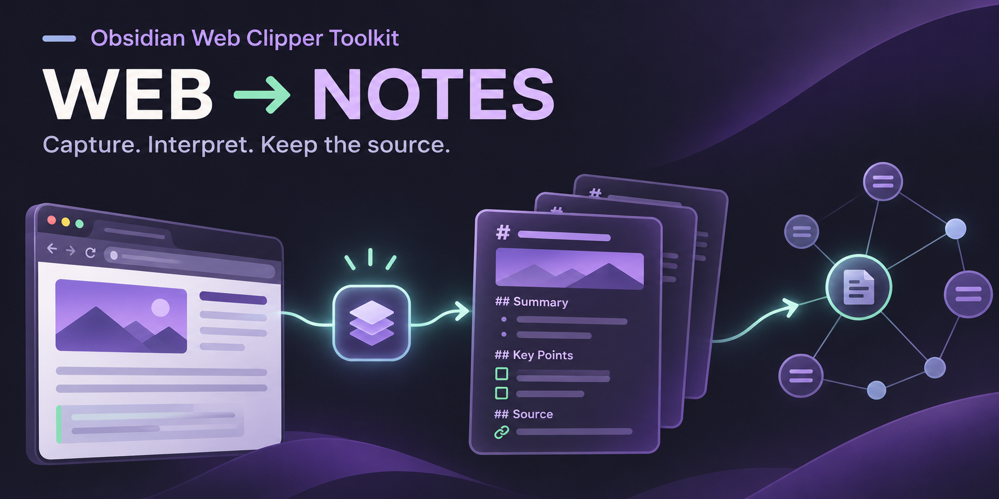

Resumen
Web → Notes
Plantillas reutilizables de Web Clipper con interpretación manual y conservación de la fuente.

Versión privada para revisión
Entregas
Balanced
6 prompts
Compact
4 prompts
Archive
0 prompts
De una página a una nota duradera
01
ObjetivoPlantillas reutilizables de Web Clipper con interpretación manual y conservación de la fuente.README.mdTodos los archivos de la versión, conectados
Los enlaces requieren acceso a GitHub mientras el repositorio sea privado.
Project
GitHub automation
aimemory


docs/de-DE
- docs/de-DE/contributing.md
- docs/de-DE/development.md
- docs/de-DE/file-templates.md
- docs/de-DE/guide.md
- docs/de-DE/install.md
- docs/de-DE/license-summary.md
- docs/de-DE/privacy.md
- docs/de-DE/project-template.md
- docs/de-DE/prompt-map.md
- docs/de-DE/publishing.md
- docs/de-DE/sources.md
- docs/de-DE/storage.md
- docs/de-DE/validation.md
docs/en-US
- docs/en-US/contributing.md
- docs/en-US/development.md
- docs/en-US/file-templates.md
- docs/en-US/github-template.md
- docs/en-US/guide.md
- docs/en-US/install.md
- docs/en-US/license-summary.md
- docs/en-US/privacy.md
- docs/en-US/project-template.md
- docs/en-US/prompt-map.md
- docs/en-US/publishing.md
- docs/en-US/sources.md
- docs/en-US/storage.md
- docs/en-US/template-comparison.md
- docs/en-US/template-validation.md
- docs/en-US/validation.md
docs/es-AR
- docs/es-AR/contributing.md
- docs/es-AR/development.md
- docs/es-AR/file-templates.md
- docs/es-AR/guide.md
- docs/es-AR/install.md
- docs/es-AR/license-summary.md
- docs/es-AR/privacy.md
- docs/es-AR/project-template.md
- docs/es-AR/prompt-map.md
- docs/es-AR/publishing.md
- docs/es-AR/sources.md
- docs/es-AR/storage.md
- docs/es-AR/validation.md
docs/es-ES
- docs/es-ES/contributing.md
- docs/es-ES/development.md
- docs/es-ES/file-templates.md
- docs/es-ES/guide.md
- docs/es-ES/install.md
- docs/es-ES/license-summary.md
- docs/es-ES/privacy.md
- docs/es-ES/project-template.md
- docs/es-ES/prompt-map.md
- docs/es-ES/publishing.md
- docs/es-ES/sources.md
- docs/es-ES/storage.md
- docs/es-ES/validation.md
docs/es-MX
- docs/es-MX/contributing.md
- docs/es-MX/development.md
- docs/es-MX/file-templates.md
- docs/es-MX/guide.md
- docs/es-MX/install.md
- docs/es-MX/license-summary.md
- docs/es-MX/privacy.md
- docs/es-MX/project-template.md
- docs/es-MX/prompt-map.md
- docs/es-MX/publishing.md
- docs/es-MX/sources.md
- docs/es-MX/storage.md
- docs/es-MX/validation.md
docs/fr-FR
- docs/fr-FR/contributing.md
- docs/fr-FR/development.md
- docs/fr-FR/file-templates.md
- docs/fr-FR/guide.md
- docs/fr-FR/install.md
- docs/fr-FR/license-summary.md
- docs/fr-FR/privacy.md
- docs/fr-FR/project-template.md
- docs/fr-FR/prompt-map.md
- docs/fr-FR/publishing.md
- docs/fr-FR/sources.md
- docs/fr-FR/storage.md
- docs/fr-FR/validation.md
docs/pt-BR
- docs/pt-BR/contributing.md
- docs/pt-BR/development.md
- docs/pt-BR/file-templates.md
- docs/pt-BR/guide.md
- docs/pt-BR/install.md
- docs/pt-BR/license-summary.md
- docs/pt-BR/privacy.md
- docs/pt-BR/project-template.md
- docs/pt-BR/prompt-map.md
- docs/pt-BR/publishing.md
- docs/pt-BR/sources.md
- docs/pt-BR/storage.md
- docs/pt-BR/validation.md
Examples
project-template
- project-template/.github/workflows/validate.yml.tmpl
- project-template/.gitignore.tmpl
- project-template/AGENTS.md.tmpl
- project-template/CHANGELOG.md.tmpl
- project-template/LICENCE.md.tmpl
- project-template/LICENSE.md.tmpl
- project-template/Proposal.md
- project-template/README.de-DE.md.tmpl
- project-template/README.es-AR.md.tmpl
- project-template/README.es-ES.md.tmpl
- project-template/README.es-MX.md.tmpl
- project-template/README.fr-FR.md.tmpl
- project-template/README.md.tmpl
- project-template/README.pt-BR.md.tmpl
- project-template/THIRD_PARTY_NOTICES.md.tmpl
- project-template/note.md.tmpl
- project-template/scripts/check_privacy.py.tmpl
- project-template/source.py.tmpl